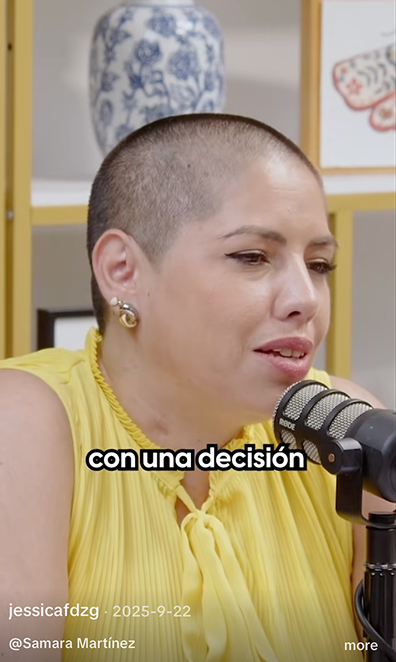
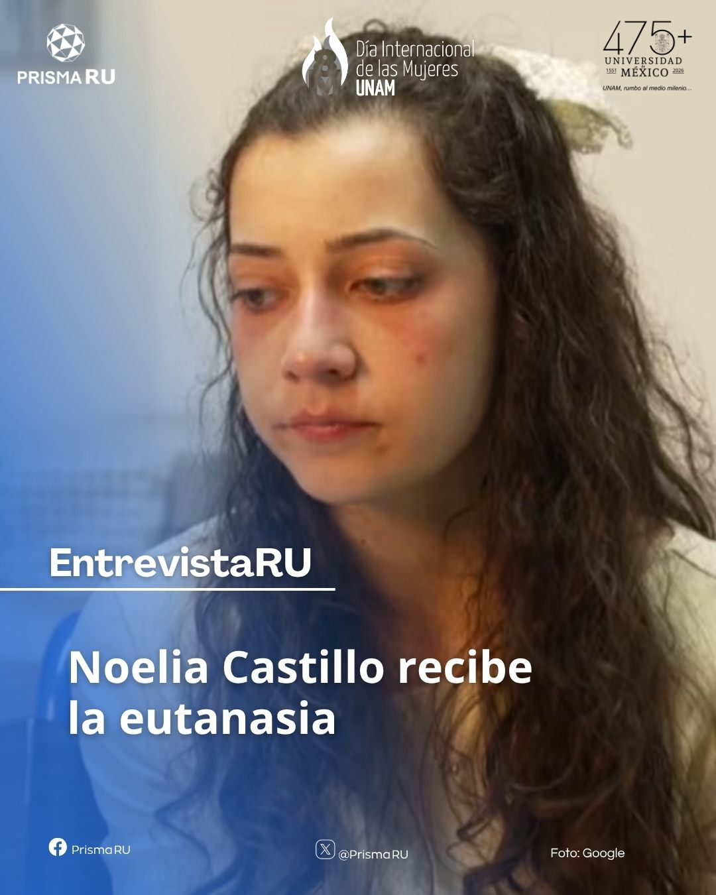
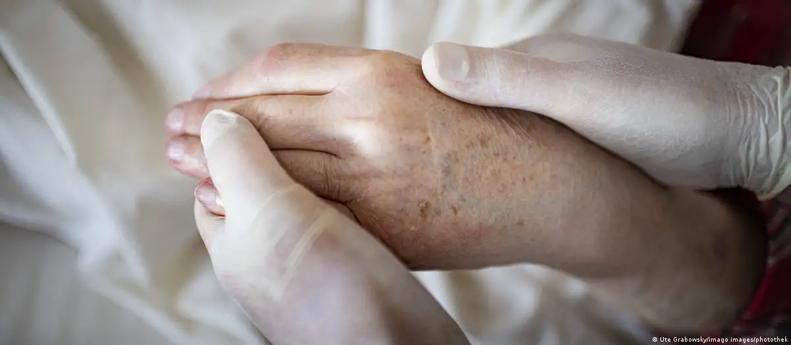
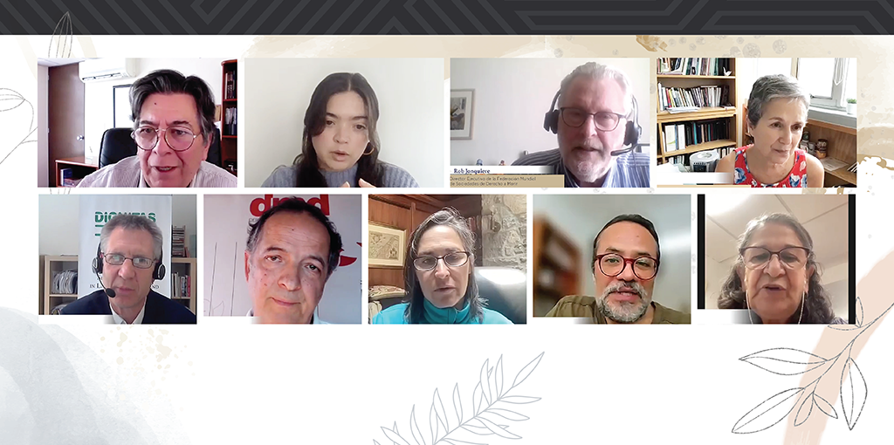

Enlaces

Nueva publicación: Por un buen final. Saber qué hacer para morir con dignidad.
Asunción Álvarez del Río.
Ahora también en ebook, disponible en palabrasyplumas.com
Categorías
Todo

Samara Martínez nos ayuda a entender por qué la Ayuda Médica para Morir debe ser una opción legal en nuestro país

Entrevista con la Dra. Asunción Álvarez sobre la eutanasia a Noelia Castillo

Uruguay aprueba ley de eutanasia por mayoría en el Senado
La regulación legal de la eutanasia
La eutanasia en la Constitución
Iniciativa ciudadana para legalizar la eutanasia
‘El último viaje’: el documental mexicano que acompaña a pacientes en su lecho de muerte
Muerte digna: decidir sobre el final de la vida

Eutanasia: Cuando elegir la muerte es lo mejor

Presentación de la iniciativa de Ley para regular la muerte médicamente asistida

Simposio sobre la iniciativa de Ley para legalizar la eutanasia y la muerte médicamente asistida en la CDMX
Francia va ahora por ley para la “asistencia en la muerte”; será estricta: Macron
Muere Paola Roldán, la mujer cuya lucha logró la despenalización de la eutanasia en Ecuador

María Benito y su derecho a la muerte digna

Marta Lamas, académica de la UNAM, habla en Agenda Pública sobre el Seminario “Libertad para Morir” que se realizó en México y que plantea una iniciativa para legalizar la eutanasia. Junio 18, 2023
Proyecto de ley de muerte digna: Una oportunidad para avanzar en la libertad y autonomía en el fin de la vida

A través de Seminario, especialistas comparten experiencias sobre la muerte asistida

¿Muerte asistida legal en CDMX? Preparan iniciativa para el Congreso

Presentarán iniciativa en Congreso CDMX para legalizar la eutanasia

Legalización de la muerte asistida, esto dice la Comisión de Derechos Humanos en CDMX
Piden marco jurídico para una muerte digna